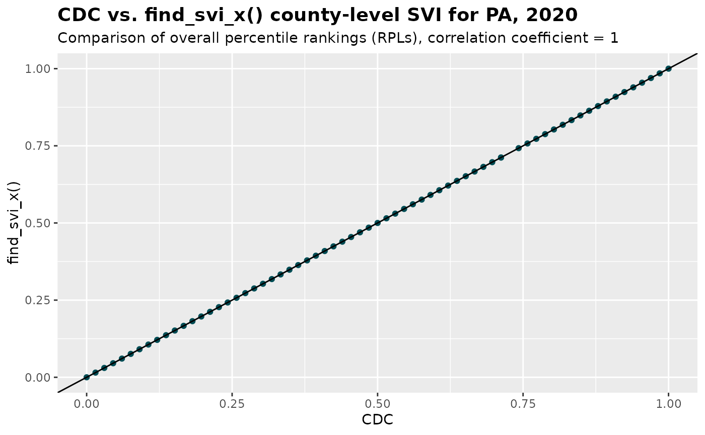

SVI Calculation for Custom Geographic Boundaries
An example using US commuting zones for 2020
Source:vignettes/articles/custom_geo.Rmd
custom_geo.RmdThe findSVI package originally calculated SVI at standard Census geographic levels, with data retrieval and SVI calculations performed at the same level. We’ve recently expanded the functionality of the package to support SVI calculations for custom geographic boundaries in which the Census geographies are fully nested.
Here we are using commuting zones as an example to demonstrate the new feature to support user-defined boundaries for SVI calculation.
library(dplyr)
library(findSVI)
library(sf)
library(ggplot2)
library(cowplot)
library(stringr)
library(readr)
library(tidyr)Commuting zones
First proposed by Tolbert and Killian in 1987 and updated by Fowler, Jensen and Rhubart in 2016, commuting zones (CZs) offer a geographic delineation to understand regional labor market, taking into account the commuter flow data and American Community Survey (ACS) data.
Geographically, CZs are based on counties (i.e., counties are fully nested in CZs) and cover the entire US. Therefore, to calculate SVI for CZs, we can retrieve the data at the county level and use a crosswalk to combine the counties to CZs level.
Workflow
Set up a crosswalk
In addition to the year and region of interest for SVI calculation,
we need to supply a user-defined crosswalk (relationship file) between
the Census geography and customized geography. For example, the
crosswalk between CZ and county for 2020 is downloaded from the Penn State Commuting Zones /
Labor Markets data repository, and modified to keep only the IDs for
counties and CZs. The resulting table cty_cz_2020_xwalk is
stored in the package as an example and a template for the crosswalk.
Note that the crosswalk should be a data frame, with column names
GEOID representing the Census geography (county) and
GEOID2 representing the user-defined geography (CZ).
GEOID should be completed nested in GEOID2 so
that the census data can be accurately aggregated to the customized
geographic level.
Optionally, the crosswalk can include another column
NAME for the description or name of the user-defined
geography, which will be included in the final SVI output.
find_svi_x()
To obtain SVI with geometries for CZs in the US for 2020, we
can use find_svi_x() to retrieve nation-level census data,
aggregate to CZ level, and calculate CZ-level SVIs.
cz_svi_geo <- find_svi_x(
year = 2020,
geography = "county",
xwalk = cty_cz_2020_xwalk, #county-commuting zone crosswalk
geometry = TRUE
)Alternatively, we can separate the data retrieval and SVI calculation
for more fine-tuning action, via get_census_data() with
exp=TRUE and get_svi_x()
data_geo <- get_census_data(
year = 2020,
geography = "county",
geometry = TRUE,
exp = TRUE
)
svi_geo <- get_svi_x(
year = 2020,
data = data_geo,
xwalk = cty_cz_2020_xwalk #county-commuting zone crosswalk
)To visualize the overall SVI for each CZ in the US (the higher the SVI, the more vulnerable a community is considered):
continent <- ggplot()+
geom_sf(data = svi_geo, aes(fill = RPL_themes))+
coord_sf(xlim = c(-130, -60), ylim = c(23, 50)) +
# Adjust xlim and ylim to focus on continental US
scale_fill_viridis_c(option = "inferno", direction = -1) +
labs(
title = "Social Vulnerability Index of US Commuting Zones (2020)",
caption = "Data source: Census ACS and https://sites.psu.edu/psucz/",
fill = "Overall SVI"
) +
theme_minimal()+
theme(
plot.title = element_text(face = "bold", hjust = 0.5),
plot.caption = element_text(size = 8),
axis.text = element_blank(),
panel.grid = element_blank(),
legend.key.size = unit(0.5, "cm"),
legend.position = "inside",
legend.position.inside = c(0.9, 0.3),
legend.frame = element_rect(color = "white", linewidth = 1),
#legend.background = element_rect(color = "black"),
legend.box.background = element_rect(color = "black"),
legend.box.margin = margin(0,1,3,0, unit = "mm")
)
#Alaska
inset_ak <- ggplot() +
geom_sf(data = svi_geo, aes(fill = RPL_themes)) +
coord_sf(xlim = c(-179.5,-130), ylim = c(51.2, 71.5)) +
scale_fill_viridis_c(option = "inferno", direction = -1) +
theme_minimal()+
theme(
axis.text = element_blank(),
panel.grid = element_blank(),
legend.position = "none"
)
#Hawaii
inset_hi <- ggplot()+
geom_sf(data = svi_geo, aes(fill = RPL_themes))+
coord_sf(xlim = c(-178.3, -154.8), ylim = c(18.9, 28.5)) +
scale_fill_viridis_c(option = "inferno", direction = -1) +
theme_minimal()+
theme(
axis.text = element_blank(),
panel.grid = element_blank(),
legend.position = "none"
)
ggdraw(continent) +
draw_plot(inset_ak, -0.3, -0.3, scale = 0.3) +
draw_plot(inset_hi, -0.2, -0.3, scale = 0.3)
If spatial information is not needed, we can leave out the
geometry argument (geometry = FALSE is
default) in find_svi_x() or get_census_data()
to obtain only the SVI variables.
Validation
In Validation of SVI results, we
have documented the comparison between SVI results from findSVI and CDC
database in standard operation. To validate the modified variable list
and the calculation table when exp=TRUE, we’ll use a
pseudo-crosswalk with replicating the county IDs (county-county
crosswalk) and compare the results from find_svi_x() with
CDC SVI.
The first 10 rows of the pseudo-crosswalk look like this:
ps_xwalk <- cty_cz_2020_xwalk %>%
select(GEOID) %>%
mutate(GEOID2 = GEOID)
ps_xwalk %>% head(10)
#> GEOID GEOID2
#> 1 01069 01069
#> 2 01023 01023
#> 3 01005 01005
#> 4 01107 01107
#> 5 01033 01033
#> 6 04012 04012
#> 7 04001 04001
#> 8 05081 05081
#> 9 05121 05121
#> 10 06037 06037Supplying the crosswalk to find_svi_x(), we are
“aggregating” each county to itself, producing county-level SVIs for
comparison with CDC SVI. The main goal is to validate that our modified
variable calculations using explicit denominators for percent estimates
produce results consistent with the CDC database.
pa_cty_svi_x2020 <- find_svi_x(
year = 2020,
geography = "county",
state = "PA",
xwalk = ps_xwalk
)Now we are ready to compare this result with CDC’s county-level SVI for PA for 2020 downloaded from CDC/ATSDR SVI data
load(system.file("testdata","cdc_pa_cty_svi2020.rda",package = "findSVI"))
#FIPS renamed to GEOID
join_RPL <- cdc_pa_cty_svi2020 %>%
select(GEOID,
cdc_RPL_themes = RPL_THEMES,
cdc_RPL_theme1 = RPL_THEME1,
cdc_RPL_theme2 = RPL_THEME2,
cdc_RPL_theme3 = RPL_THEME3,
cdc_RPL_theme4 = RPL_THEME4) %>%
mutate(GEOID = paste(GEOID)) %>%
left_join(pa_cty_svi_x2020 %>%
select(GEOID,
RPL_themes,
RPL_theme1,
RPL_theme2,
RPL_theme3,
RPL_theme4)) %>%
drop_na() %>% ## remove NA rows
filter_all(all_vars(. >= 0)) #-999 in cdc data
#> Joining with `by = join_by(GEOID)`
coeff <- cor(join_RPL$cdc_RPL_themes, join_RPL$RPL_themes)
join_RPL %>%
ggplot(aes(x = cdc_RPL_themes, y = RPL_themes)) +
geom_point(color = "#004C54")+
geom_abline(slope = 1, intercept = 0)+
labs(
title = "CDC vs. find_svi_x() county-level SVI for PA, 2020",
subtitle = paste0("Comparison of overall percentile rankings (RPLs), correlation coefficient = ", coeff),
y = "find_svi_x()",
x = "CDC")+
theme(plot.title = element_text(size= 14, face = "bold"))
Appendix: mapping SVI (percentage) variables to census variables
Currently, the variable retrieval process by
get_census_data() follows the CDC/ATSDR
SVI documentation strictly, where SVI variables starting with “EP_”
(percent estimate) are sometimes obtained directly from Census, while in
other cases are values computed from Census variables.
For example, in the variable table below for 2020, the calculation
field (the last column) for EP_UNEMP is a Census variable
and a calculation formula for EP_POV150. As a result,
DP03_0009PE from Census is directly used as
EP_UNEMP, whereas S1701_C01_001E is obtained
from Census and used to calculate EP_POV150 (along with
E_POV150).
variable_e_ep_calculation_2020 %>%
filter(
!theme == 5,
str_starts(x2020_variable_name, "EP_")
)
#> # A tibble: 16 × 3
#> x2020_variable_name theme x2020_table_field_calculation
#> <chr> <dbl> <chr>
#> 1 EP_POV150 1 (E_POV150 /S1701_C01_001E) * 100
#> 2 EP_UNEMP 1 DP03_0009PE
#> 3 EP_HBURD 1 (E_HBURD /S2503_C01_001E) *100
#> 4 EP_NOHSDP 1 S0601_C01_033E
#> 5 EP_UNINSUR 1 S2701_C05_001E
#> 6 EP_AGE65 2 S0101_C02_030E
#> 7 EP_AGE17 2 (E_AGE17 /E_TOTPOP) * 100
#> 8 EP_DISABL 2 DP02_0072PE
#> 9 EP_SNGPNT 2 (E_SNGPNT/E_HH) *100
#> 10 EP_LIMENG 2 (E_LIMENG /B16005_001E) * 100
#> 11 EP_MINRTY 3 (E_MINRTY /E_TOTPOP) * 100
#> 12 EP_MUNIT 4 (E_MUNIT / E_HU) *100
#> 13 EP_MOBILE 4 DP04_0014PE
#> 14 EP_CROWD 4 (E_CROWD /DP04_0002E) * 100
#> 15 EP_NOVEH 4 DP04_0058PE
#> 16 EP_GROUPQ 4 (E_GROUPQ /E_TOTPOP) * 100However, for aggregation purposes, percent estimates cannot be summed
up directly to a larger geographic level. Instead, we need to use summed
“E_” SVI variables (count estimate) and the corresponding “total” count
to calculate the CZ-level percent. Therefore, we need to modify
variables like DP03_0009PE for EP_UNEMP so
that the calculation field for all “EP_” variables are formula with
explicitly defined denominator (total counts). For example:
variable_cal_exp_2020 %>%
filter(
!theme == 5,
str_starts(x2020_variable_name, "EP_")
)
#> # A tibble: 16 × 3
#> x2020_variable_name theme x2020_table_field_calculation
#> <chr> <dbl> <chr>
#> 1 EP_POV150 1 (E_POV150 /S1701_C01_001E) * 100
#> 2 EP_UNEMP 1 (E_UNEMP /DP03_0003E) * 100
#> 3 EP_HBURD 1 (E_HBURD /S2503_C01_001E) *100
#> 4 EP_NOHSDP 1 (E_NOHSDP /B06009_001E) * 100
#> 5 EP_UNINSUR 1 (E_UNINSUR /S2701_C01_001E) * 100
#> 6 EP_AGE65 2 (E_AGE65 /E_TOTPOP) * 100
#> 7 EP_AGE17 2 (E_AGE17 /E_TOTPOP) * 100
#> 8 EP_DISABL 2 (E_DISABL /S2701_C01_001E) * 100
#> 9 EP_SNGPNT 2 (E_SNGPNT/E_HH) *100
#> 10 EP_LIMENG 2 (E_LIMENG /B16005_001E) * 100
#> 11 EP_MINRTY 3 (E_MINRTY /E_TOTPOP) * 100
#> 12 EP_MUNIT 4 (E_MUNIT / E_HU) *100
#> 13 EP_MOBILE 4 (E_MOBILE /DP04_0001E) * 100
#> 14 EP_CROWD 4 (E_CROWD /DP04_0002E) * 100
#> 15 EP_NOVEH 4 (E_NOVEH /DP04_0002E) * 100
#> 16 EP_GROUPQ 4 (E_GROUPQ /E_TOTPOP) * 100To integrate the modified variable lists to
get_census_data(), we introduce another argument
exp, where we can specify which of the two variables list
is used:
(Default)
exp = FALSE: use variables following CDC/ATSDR documentation.exp = TRUE: use variables with explicitly defined denominator.
For use with get_svi_x(), exp = TRUE is
recommended.